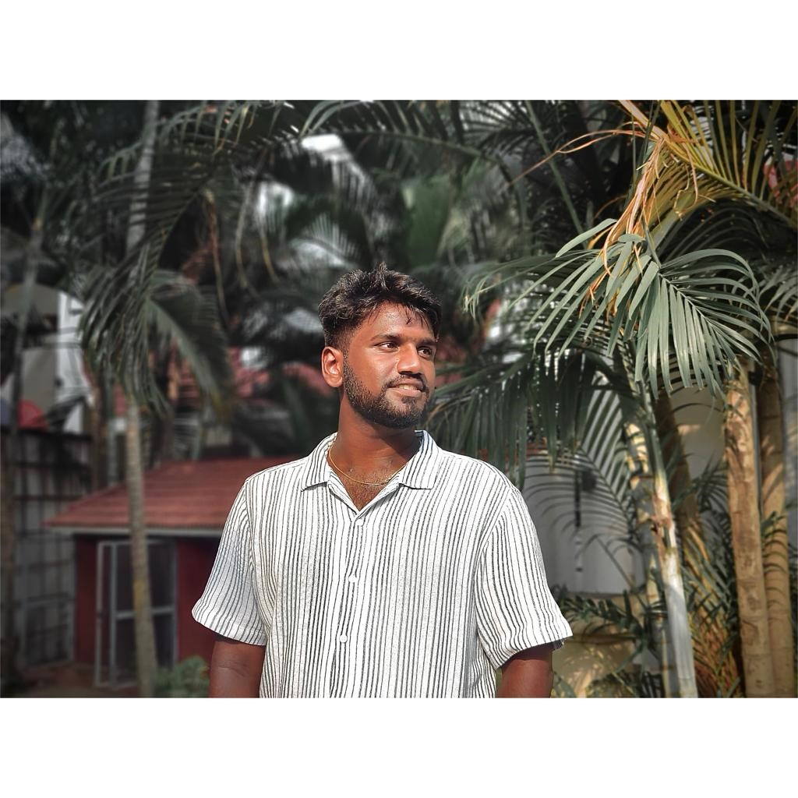

Programming
Core languages and application foundations.
OPEN TO OPPORTUNITIES
HELLO, I'M
I build reliable software experiences and explore the systems that keep them running — from application development to DevOps and cloud infrastructure.

I’m a Computer Science graduate who enjoys turning ideas into practical, dependable digital solutions.
My interests span Java and application development, automation, CI/CD workflows, containers, and cloud technologies. Through projects and internship experience, I’ve been building a hands-on understanding of how software is developed, delivered, and maintained.
I value curiosity, clear communication, and learning by building — one improvement at a time.
Explore my GitHub ↗A growing set of tools for building, shipping, and supporting software.
Core languages and application foundations.
Tools and practices for repeatable delivery.
Cloud concepts, deployment, and troubleshooting.
Working with data and everyday engineering tools.
INTERNSHIP
Built practical familiarity with source control, automation, containers, and deployment workflows in a DevOps environment.
Projects that bring together development, deployment, automation, and experimentation.
A shoe-shopping website concept bringing together a full-stack application with a containerized delivery workflow.
View GitHub profile ↗A project focused on automating delivery and exploring monitoring for a student grade analytics application.
View GitHub profile ↗An exploration of packaging a prediction model and deploying supporting infrastructure using cloud and automation tools.
View GitHub profile ↗Project links currently point to my GitHub profile. Individual repository links can be added when available.
GITAM University
SASI College
Sri Chaitanya
OPEN TO OPPORTUNITIES
Interested in an opportunity or want to talk about technology? I’d be happy to connect.